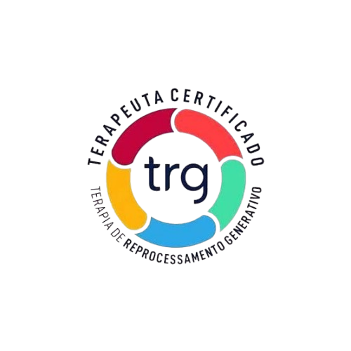

Ansiedade constante, traumas do passado e padrões emocionais repetitivos podem estar controlando sua vida. A Terapia TRG atua diretamente na raiz dessas memórias emocionais.
Quero agendar minha sessãoAnsiedade que aparece sem motivo claro
Dificuldade para dormir por excesso de pensamentos
Traumas antigos que ainda doem
Relacionamentos que seguem o mesmo padrão
Entenda a TRG: O Caminho para a Liberdade Emocional
Você já sentiu que, por mais que tente seguir em frente, parece haver um "freio de mão" puxado na sua vida? Muitas vezes, traumas, medos e bloqueios do passado ficam registrados em nosso inconsciente, influenciando nossas escolhas, sentimentos e até nossa saúde física sem que percebamos.
Diferente das abordagens tradicionais que focam apenas no autoconhecimento ou em longas conversas sobre o problema, a TRG atua diretamente no inconsciente.
O objetivo não é apenas aprender a "conviver" com o sofrimento, mas sim reprocessar a dor para que ela perca sua carga emocional negativa.
A terapia segue um protocolo estruturado com 5 métodos fundamentais:
Varre toda a sua história, desde o nascimento até o presente, limpando as marcas emocionais deixadas ao longo da vida.
Foca na liberação de dores e sintomas físicos que têm origem emocional, ajudando o corpo a descarregar o trauma acumulado.
Trabalha medos ou problemas específicos que ainda persistem após a limpeza cronológica.
Prepara o seu psiquismo para enfrentar desafios vindouros, eliminando a ansiedade antecipatória.
Fortalece sua identidade e recursos internos para que você assuma o controle total da sua vida.
Moabe Lima é terapeuta TRG e realiza atendimentos online para pessoas em todo o Brasil, auxiliando adultos e casais a compreenderem suas emoções, superarem bloqueios e retomarem o equilíbrio emocional.
Casado, pai de três filhos e avô de oito netos, Moabe reúne experiência de vida, escuta empática e profundo compromisso com o desenvolvimento humano.
Sua formação acadêmica é multidisciplinar e voltada ao comportamento humano. É graduado em Administração e Teologia, cursou Psicologia e especializou-se na área de Humanas com foco em Inteligência Emocional. Possui pós-graduação em Gestão de Pessoas pela Amana-Key, referência nacional em desenvolvimento de líderes.
Acrescenta-se ainda a especialização em leitura corporal e comportamental, formação que aprofunda a análise dos traços de caráter e dos padrões que moldam o comportamento humano, contribuindo de forma significativa para a compreensão dos relacionamentos e das dinâmicas emocionais.
Há mais de 30 anos, Moabe atua como palestrante e mentor nas áreas de liderança, clima organizacional e relacionamentos. Construiu sólida trajetória no mundo corporativo como gestor comercial em grandes grupos empresariais brasileiros, entre eles Grupo Claudino, Magazine Luiza e Amvox. Atualmente, também é sócio-diretor da Koren Cosméticos, empresa com sede em São Paulo e forte atuação no mercado nacional.
Toda essa bagagem profissional e humana se une hoje ao trabalho terapêutico, oferecendo aos pacientes uma abordagem acolhedora, madura e orientada para resultados emocionais reais.
Como terapeuta TRG, Moabe Lima auxilia pessoas que enfrentam ansiedade, traumas, conflitos emocionais, dificuldades nos relacionamentos e padrões de comportamento que se repetem ao longo da vida.
Seu propósito é oferecer um espaço seguro, sigiloso e respeitoso, onde cada pessoa possa compreender sua história, reorganizar suas emoções e construir uma vida com mais leveza, clareza e equilíbrio.
Se você busca apoio emocional, autoconhecimento e transformação, será acolhido com seriedade, experiência e cuidado.

Certificação Profissional Autorizada
Depende do caso, mas muitos pacientes percebem mudanças nas primeiras sessões.
Sim. O processo é 100% confidencial.
Sim, por chamada de vídeo segura em todo o Brasil.
Sua saúde emocional não pode esperar.
Agendar agora pelo WhatsApp